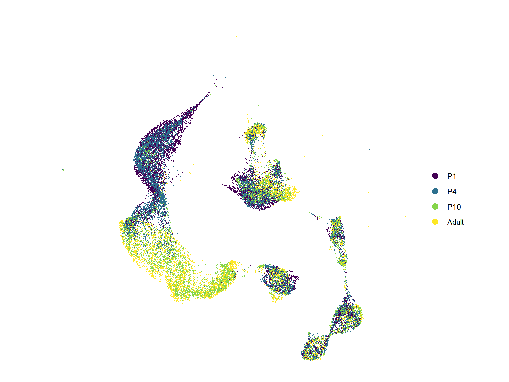
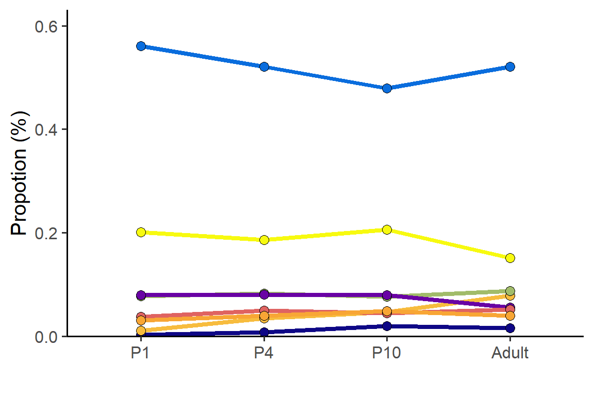
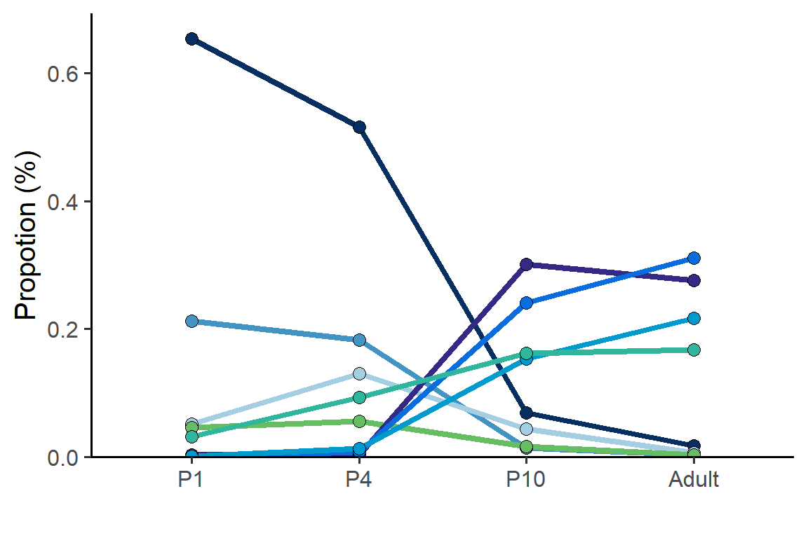
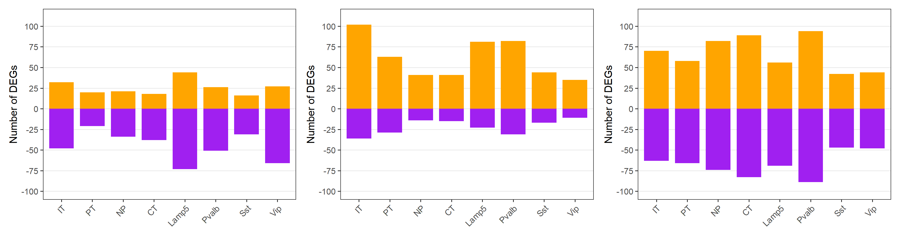
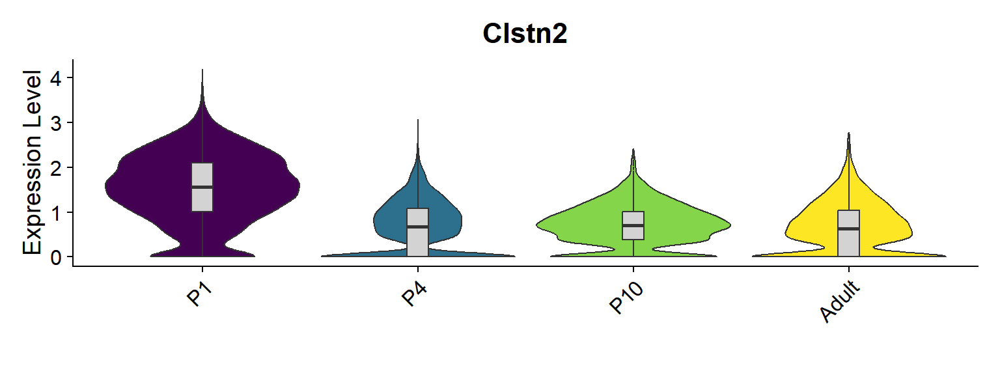

Code
library(Seurat)
library(tidyverse)
library(scCustomize)
source('bin/Palettes.R')library(Seurat)
library(tidyverse)
library(scCustomize)
source('bin/Palettes.R')seu.harmony <- readRDS('../data/seu.harmony.rds')
seu.neuron <- seu.harmony[,seu.harmony$SubType %in% names(col_SubType)[1:15]]seu <- seu.neuron
seu$orig.ident <- factor(seu$orig.ident, levels = c("P1","P4","P10","Adult"))
Figure_S2A <-
DimPlot(seu,
reduction = 'umap', group.by = "orig.ident", label = F, shuffle=T, seed=123,
cols = col_Time) +
theme_void() +
labs(x='', y='', title = "") +
coord_fixed()
Figure_S2A
ggsave("../../Figure/FigureS2/Figure_S2A.pdf", plot = Figure_S2A,
height = 6, width = 8, units = "in")seu <- seu.neuron
seu$Group <- seu$SubType
seu$Group[seu$Group %in% names(col_SubType)[1:8]] <- "IT"
seu$Group[seu$Group == "L5 PT"] <- "PT"
seu$Group[seu$Group == "L5 NP"] <- "NP"
seu$Group[seu$Group == "L6 CT"] <- "CT"
data <- table(seu$orig.ident, seu$Group)
data <- as.data.frame(data/rowSums(data))
colnames(data) <- c("Time", "SubType", "Prob")
data$Time <- factor(data$Time, levels = c("P1","P4","P10","Adult"))
data$SubType <- factor(data$SubType,
levels = c("IT","PT","NP","CT","Lamp5","Pvalb","Sst","Vip"))
colors <- c("IT"="#0a6ddd","PT"="#a1bc6a", "NP"="#f7bc3e", "CT"="#f7fa10",
"Lamp5"="#0e0786", "Pvalb"="#6902a4", "Sst"="#df6361", "Vip"="#f8a635")
Figure_S2B <-
ggplot(data, aes(x=Time, y=Prob, color=SubType, fill=SubType, group=SubType)) +
geom_line(linewidth=1.5) +
geom_point(shape=21, color="black", size=3) +
labs(x="", y="Propotion (%)") +
scale_y_continuous(breaks=seq(0,0.6,0.2), limits = c(0,0.6),
expand = expansion(mult = c(0, 0.05))) +
theme_classic(base_size = 15) +
theme(legend.position = "none") +
scale_fill_manual(values=colors) +
scale_color_manual(values=colors)
Figure_S2B
ggsave("../../Figure/FigureS2/Figure_S2B.pdf", plot = Figure_S2B,
height = 4, width = 6, units = "in")seu <- subset(seu.neuron, cells=colnames(seu.neuron)[seu.neuron$SubType %in% names(col_SubType)[1:8]])
seu$Group <- seu$SubType
data <- table(seu$orig.ident, seu$Group)
data <- as.data.frame(data/rowSums(data))
colnames(data) <- c("Time", "SubType", "Prob")
data$Time <- factor(data$Time, levels = c("P1","P4","P10","Adult"))
data$SubType <- factor(data$SubType,
levels = names(col_SubType)[1:8])
Figure_S2C <-
ggplot(data, aes(x=Time, y=Prob, color=SubType, fill=SubType, group=SubType)) +
geom_line(linewidth=1.5) +
geom_point(shape=21, color="black", size=3) +
labs(x="", y="Propotion (%)") +
scale_y_continuous(breaks=seq(0,0.66,0.2), limits = c(0,0.66),
expand = expansion(mult = c(0, 0.05))) +
theme_classic(base_size = 15) +
theme(legend.position = "none") +
scale_fill_manual(values=col_SubType) +
scale_color_manual(values=col_SubType)
Figure_S2C
ggsave("../../Figure/FigureS2/Figure_S2C.pdf", plot = Figure_S2C,
height = 4, width = 6, units = "in")DEGs_all <- read.csv("../data/Figure2/DEGs_Time_Neuron.csv")
# P1 - P4
subtype <- c("P4_IT","P4_PT","P4_NP","P4_CT","P4_Lamp5","P4_Pvalb","P4_Sst","P4_Vip")
DEGs <- DEGs_all[abs(DEGs_all$avg_log2FC)>1 & DEGs_all$ident.1 %in% subtype,]
DEGs$ident.1 <- gsub("P4_","",DEGs$ident.1)
DEGs$type <- "Up"
DEGs$type[DEGs$avg_log2FC<0] <- "Down"
data <- as.data.frame(table(DEGs$ident.1, DEGs$type))
colnames(data) <- c("Subtype", "Type", "Num")
data$Subtype <- factor(data$Subtype, levels = gsub("P4_","",subtype))
p1 <-
ggplot(data, aes(x=Subtype, y=ifelse(Type=="Up", Num, -Num), fill=Type)) +
geom_bar(stat = "identity", width = 0.8) +
labs(y="Number of DEGs", x="") +
scale_y_continuous(breaks=c(-100,-75,-50,-25,0,25,50,75,100), limits = c(-110,110),
expand = expansion(mult = c(0, 0.05))) +
theme_bw(base_size = 15) +
theme(legend.position = "none", panel.grid.minor.y = element_blank(),
axis.text.x = element_text(angle = 45, hjust = 1),
panel.grid.major.x = element_blank()) +
scale_fill_manual(values = c("Up"="orange", "Down"="purple")) +
scale_color_manual(values = c("Up"="orange", "Down"="purple"))
# P4 - P10
subtype <- c("P10_IT","P10_PT","P10_NP","P10_CT","P10_Lamp5","P10_Pvalb","P10_Sst","P10_Vip")
DEGs <- DEGs_all[abs(DEGs_all$avg_log2FC)>1 & DEGs_all$ident.1 %in% subtype,]
DEGs$ident.1 <- gsub("P10_","",DEGs$ident.1)
DEGs$type <- "Up"
DEGs$type[DEGs$avg_log2FC<0] <- "Down"
data <- as.data.frame(table(DEGs$ident.1, DEGs$type))
colnames(data) <- c("Subtype", "Type", "Num")
data$Subtype <- factor(data$Subtype, levels = gsub("P10_","",subtype))
p2 <-
ggplot(data, aes(x=Subtype, y=ifelse(Type=="Up", Num, -Num), fill=Type)) +
geom_bar(stat = "identity", width = 0.8) +
labs(y="Number of DEGs", x="") +
scale_y_continuous(breaks=c(-100,-75,-50,-25,0,25,50,75,100), limits = c(-110,110),
expand = expansion(mult = c(0, 0.05))) +
theme_bw(base_size = 15) +
theme(legend.position = "none", panel.grid.minor.y = element_blank(),
axis.text.x = element_text(angle = 45, hjust = 1),
panel.grid.major.x = element_blank()) +
scale_fill_manual(values = c("Up"="orange", "Down"="purple")) +
scale_color_manual(values = c("Up"="orange", "Down"="purple"))
# P10 - Adult
subtype <- c("Adult_IT","Adult_PT","Adult_NP","Adult_CT","Adult_Lamp5","Adult_Pvalb","Adult_Sst","Adult_Vip")
DEGs <- DEGs_all[abs(DEGs_all$avg_log2FC)>1 & DEGs_all$ident.1 %in% subtype,]
DEGs$ident.1 <- gsub("Adult_","",DEGs$ident.1)
DEGs$type <- "Up"
DEGs$type[DEGs$avg_log2FC<0] <- "Down"
data <- as.data.frame(table(DEGs$ident.1, DEGs$type))
colnames(data) <- c("Subtype", "Type", "Num")
data$Subtype <- factor(data$Subtype, levels = gsub("Adult_","",subtype))
p3 <-
ggplot(data, aes(x=Subtype, y=ifelse(Type=="Up", Num, -Num), fill=Type)) +
geom_bar(stat = "identity", width = 0.8) +
labs(y="Number of DEGs", x="") +
scale_y_continuous(breaks=c(-100,-75,-50,-25,0,25,50,75,100), limits = c(-110,110),
expand = expansion(mult = c(0, 0.05))) +
theme_bw(base_size = 15) +
theme(legend.position = "none", panel.grid.minor.y = element_blank(),
axis.text.x = element_text(angle = 45, hjust = 1),
panel.grid.major.x = element_blank()) +
scale_fill_manual(values = c("Up"="orange", "Down"="purple")) +
scale_color_manual(values = c("Up"="orange", "Down"="purple"))
p1+p2+p3
ggsave("../../Figure/FigureS2/Figure_S2D_1.pdf", plot = p1,
height = 5, width = 6, units = "in")
ggsave("../../Figure/FigureS2/Figure_S2D_2.pdf", plot = p2,
height = 5, width = 6, units = "in")
ggsave("../../Figure/FigureS2/Figure_S2D_3.pdf", plot = p3,
height = 5, width = 6, units = "in")seu.IT <- subset(seu.neuron, cells = colnames(seu.neuron)[which(seu.neuron$SubType %in% names(col_SubType)[1:8])])
seu.IT$orig.ident <- factor(seu.IT$orig.ident, levels = c("P1","P4","P10","Adult"))
Figure_S2E <-
VlnPlot_scCustom(seurat_object = seu.IT, features = "Clstn2", group.by = "orig.ident", pt.size = 0) & NoLegend() &
geom_boxplot(width=0.1, outlier.size=0, fill="lightgray") &
scale_fill_manual(values = col_Time) &
labs(x="")
Figure_S2E
ggsave("../../Figure/FigureS2/Figure_S2E_Clstn2.pdf", plot = Figure_S2E,
height = 3, width = 8, units = "in")